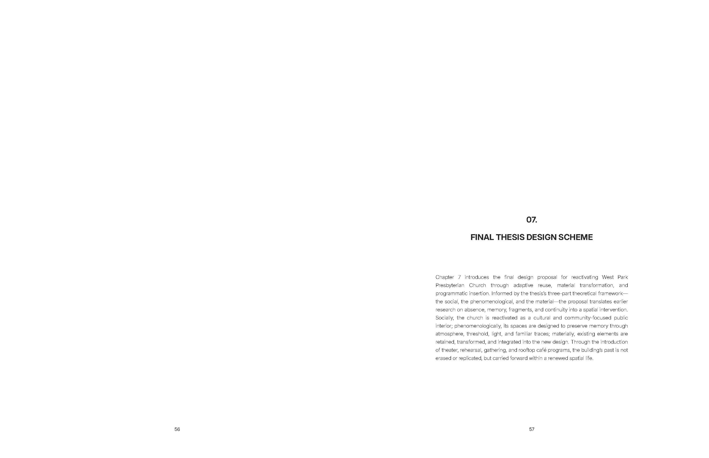
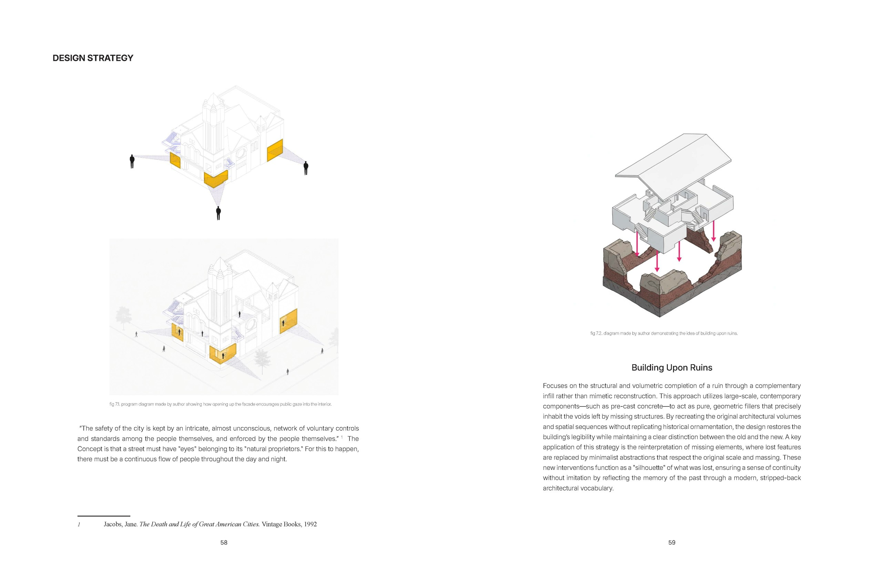
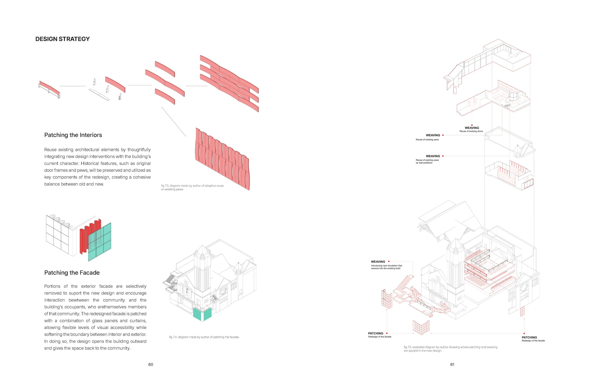
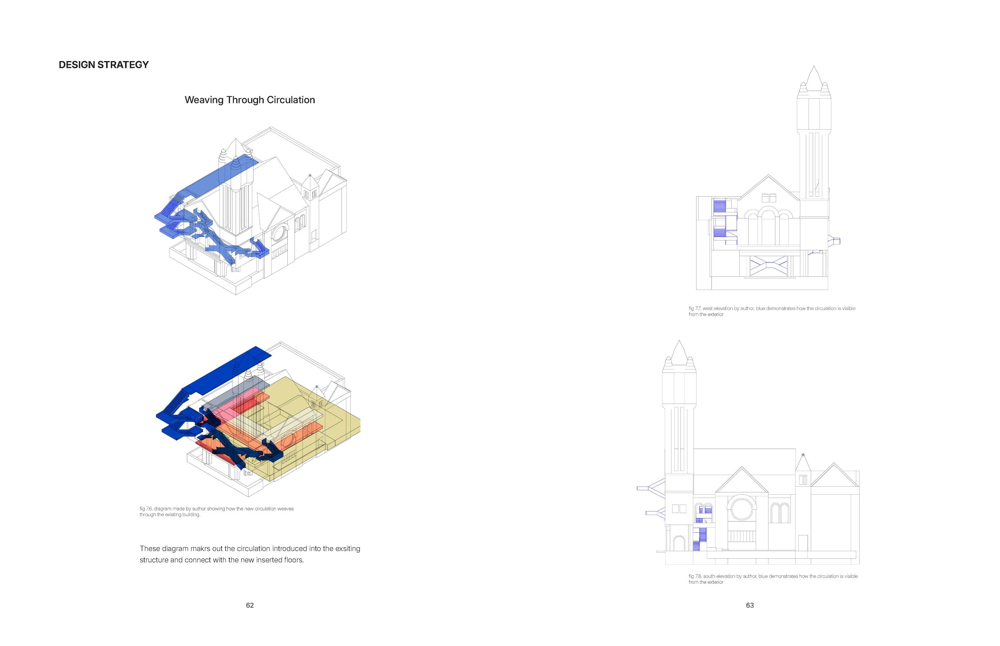
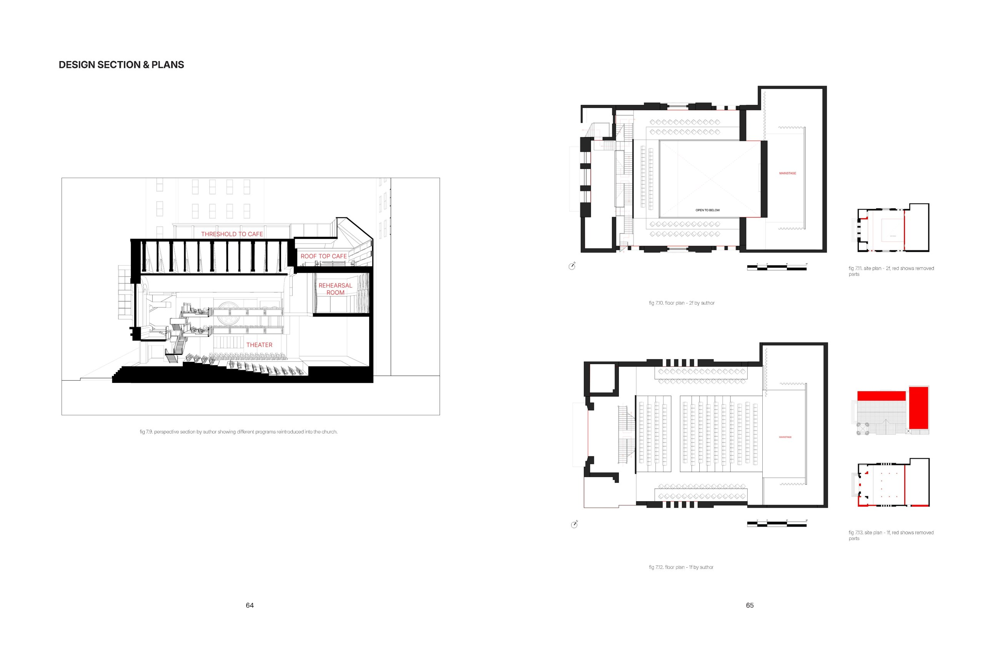
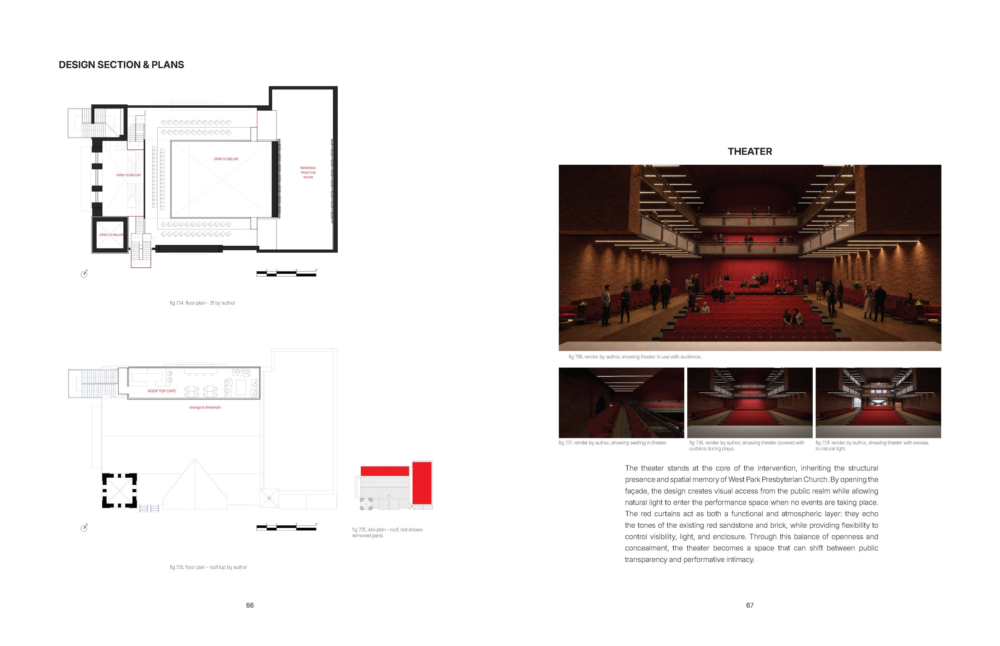
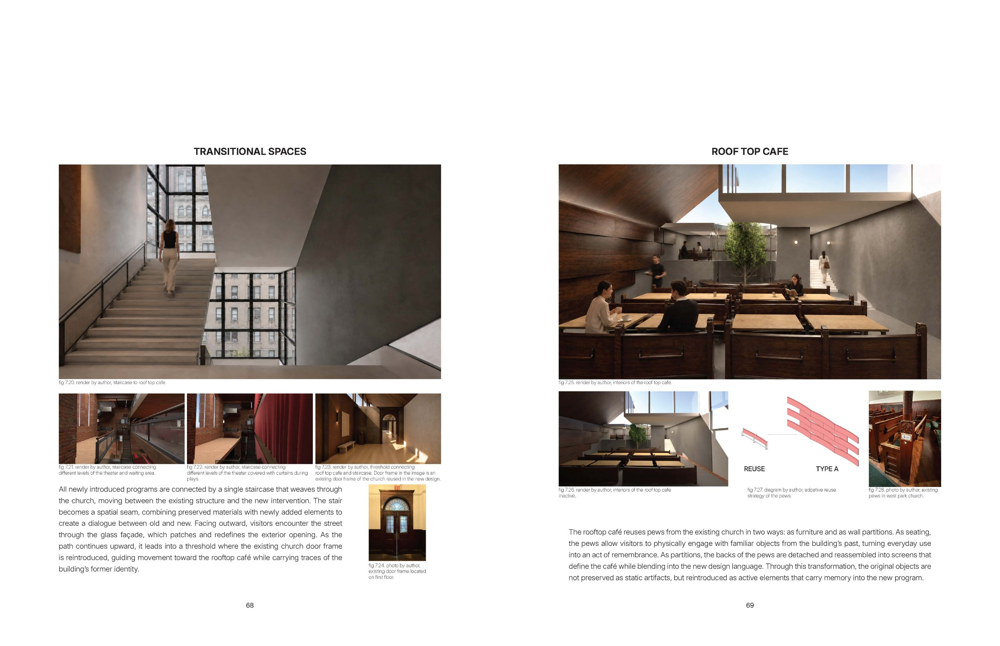
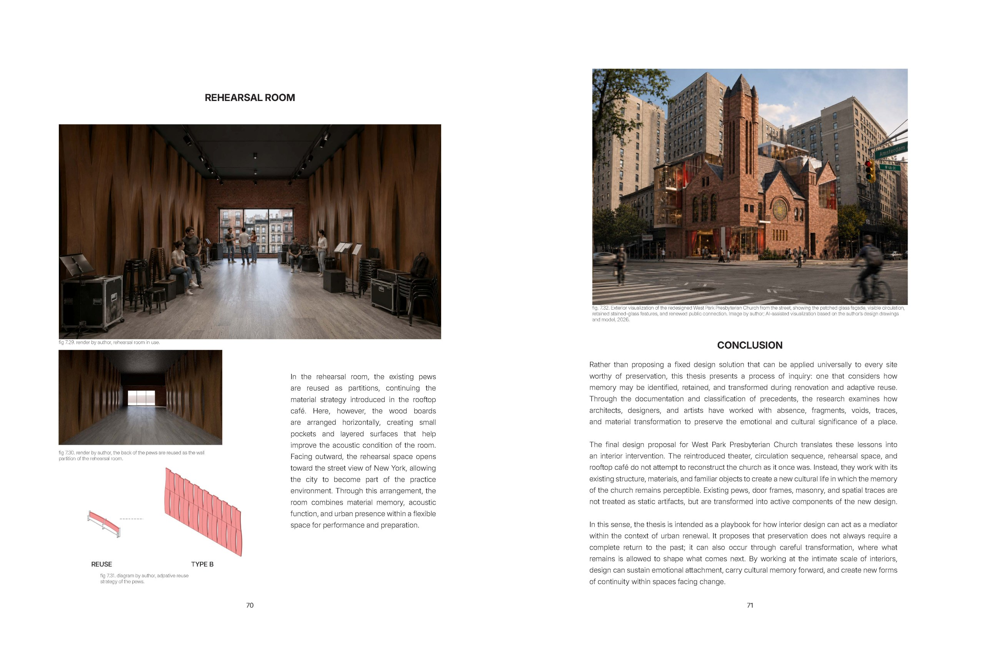

← Back
Present Absence
The Interior as Register of Memory in the Context of Urban Renewal
This project explores how adaptive reuse can preserve collective memory within meaningful spaces. Using West-Park Presbyterian Church in New York as its site, the proposal reintroduces the historic building as a community theater, where performance, material reuse, and spatial transformation allow traces of the past to remain present.








